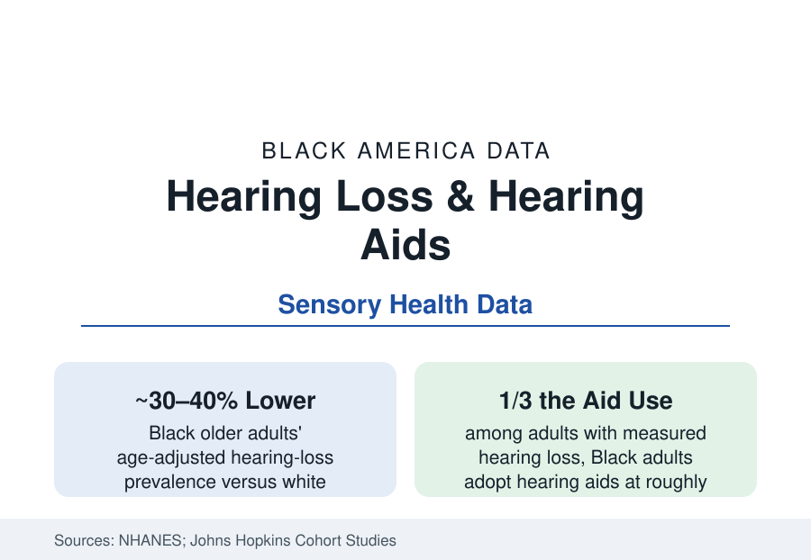

Black Public Health
Hearing Loss and Black Adults: The One Gap That Runs Backwards — Except at the Counter
Black older adults have measurably less hearing loss than white peers in the national examinations — and a fraction of their hearing-aid use. The NHANES and access data.

This section's files run so uniformly in one direction that the exception deserves its own article: in the national audiometric examinations — hearing measured by machine, not by self-report — older Black adults have substantially less hearing loss than older white adults, on the order of thirty to forty percent lower prevalence at the same ages in the NHANES series, a finding replicated across decades and attributed in the literature substantially to melanin's protective role in the inner ear's stria vascularis. And then the familiar pattern reasserts itself at the remedy: among those who do lose hearing, Black adults adopt hearing aids at roughly a third the white rate. Biology dealt a better hand. The market dealt it back. This article reads the sensory file.
The Prevalence Inversion and Its Science
The NHANES audiometry data (the gold-standard measured series) establish the inversion rigorously: at every age band past fifty, Black participants' pure-tone averages run better than white participants', with the gap widening at the higher frequencies — the pattern the cochlear-melanin hypothesis predicts (the pigment cells of the inner ear, denser in darker-skinned populations, protecting the stria's metabolic machinery against age and noise in the animal and human evidence) and that the noise-exposure files complicate (the occupational noise data of the employment section — the factories and the firing ranges — predicting the opposite of the finding, which survives the adjustment anyway). The other ear diseases distribute without the inversion: tinnitus self-reports, balance disorders in the survey data, and the childhood hearing file (newborn screening's universality the system's one equal doorway — the follow-up and early-intervention enrollment data behind it regaining the usual gradient, Black infants' diagnostic follow-up after failed screens running later in the state program data). The researchers' caution is recorded with the finding: prevalence is not destiny, and the aging of the population raises the absolute count of Black hearing loss every year the longevity file adds.
The Aid Gap: Price, Medicare, and the Stigma File
The treatment data are the section's standard shape in an inverted frame: hearing aids at several thousand dollars a pair in the traditional market, excluded from Medicare coverage by statute since 1965 (the program's founding carve-out, never repealed — the audiology benefit covering diagnosis, the device itself a consumer purchase), adopted by roughly a fifth to a third of the white adults who need them and a third of that fraction among Black adults in the survey series — the price gate operating on the wealth file's gradient, compounded by the access chain (audiologist density in the workforce data, the primary-care referral conversation the visit studies show happening least for the patients with least advocacy) and the stigma file (the aid's visibility, the aging signification — the qualitative literature recording the calculus in Black elders' own words, in the context of families and churches where the unamplified elder is accommodated rather than treated, an accommodation with genuine love in it and a cognitive price in the next paragraph's data). The market disruption is the current count: the FDA's 2022 over-the-counter hearing-aid category (devices at a tenth the traditional price, sold without a professional visit) — whose early adoption data the surveys are only beginning to record, the democratization bet of the decade in sensory health.
The Consequences: Cognition, Isolation, and the Misread Chart
Untreated hearing loss is not a passive condition in the outcomes literature — it is a risk engine: the Johns Hopkins cohort work (the field's reference studies) associates hearing loss with accelerated cognitive decline and elevated dementia risk in a dose-response pattern, names hearing loss the largest single modifiable contributor to dementia in the Lancet commission's accounting (roughly seven to nine percent of cases attributable in the population models), and ran the randomized trial (the ACHIEVE study) showing hearing treatment slowing cognitive decline in the higher-risk subgroup — the Alzheimer's article's ledger intersecting this one at the ear. The social data run alongside: the isolation and depression measures climbing with untreated loss (the mental-health file's elder chapter), the falls and hospitalization associations, and the clinical misreadings (the 'noncompliant,' 'confused,' 'poor historian' of the chart notes — the patient who could not hear the question, in the communication studies' audits of exactly this error, its distribution across the patient population nobody has yet published by race, the absence itself predictable). The workforce data add the working years: the occupational hearing conservation programs' fit-testing and the accommodation file (the hearing-loss workers of the manufacturing and military files — the veterans' tinnitus and hearing claims constituting the VA's most common service-connected disabilities, their Black claimants inside the benefits file's adjudication data).
Reading the Hearing Data
Less disease, less treatment, same consequences: the hearing file is the section's control case for its own thesis — remove the incidence gap entirely, grant the population the biological advantage, and the access gradient reproduces the outcome gap at the device counter anyway. The ear was never the obstacle. The price tag, the statute, and the referral were — and the new over-the-counter shelf is the first instrument aimed at all three at once. Its adoption data, by race, will be this file's next edition.
More in Black Public Health
Hypertension Among Black Adults: Prevalence, Control, and Consequences
About 55 percent of Black adults have hypertension — the highest rate of any U.S. group. Prevalence, onset, control, and the stroke, heart, and kidney consequences in the data.
Diabetes Among Black Adults: Prevalence and Complications
Nearly one in five Black adults has diabetes, diagnosed or undiagnosed — and its complications fall with particular weight. The CDC data on prevalence, control, and outcomes.
Black Life Expectancy: The Gap at Birth and Its Causes
Black life expectancy at birth is about 73 years, roughly five years below the national figure — the summary measure of every health gap in this section. The CDC data.
Source: National Health and Nutrition Examination Survey audiometry data; Johns Hopkins hearing research; National Institute on Deafness and Other Communication Disorders; Medicare claims analyses.